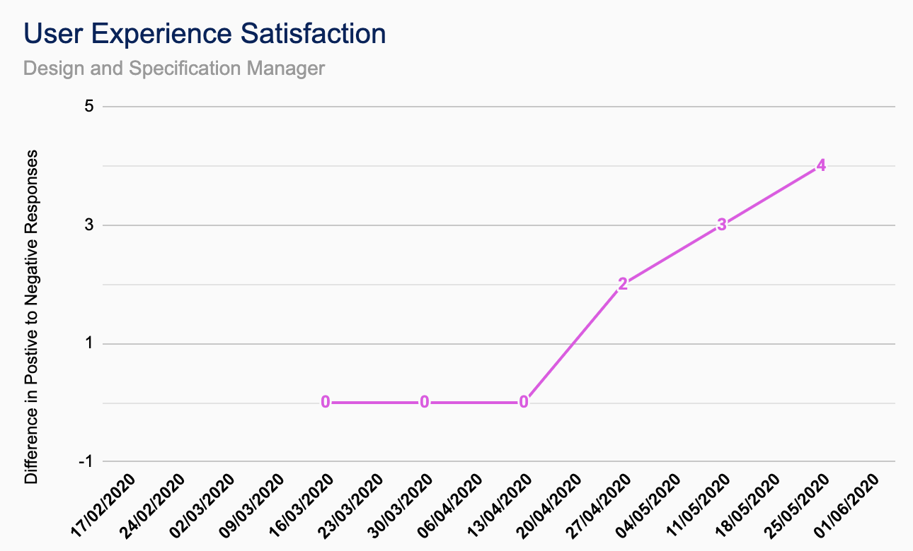
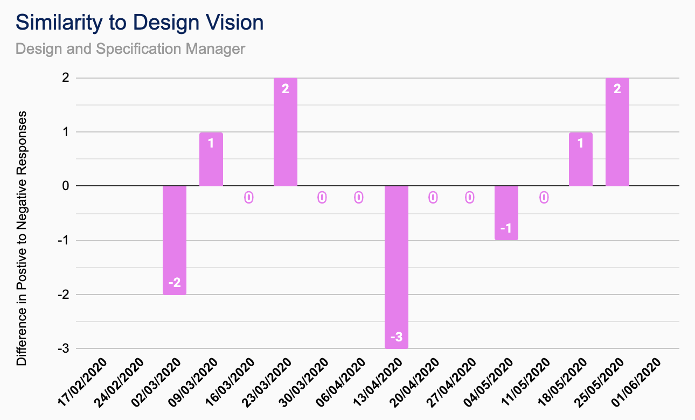
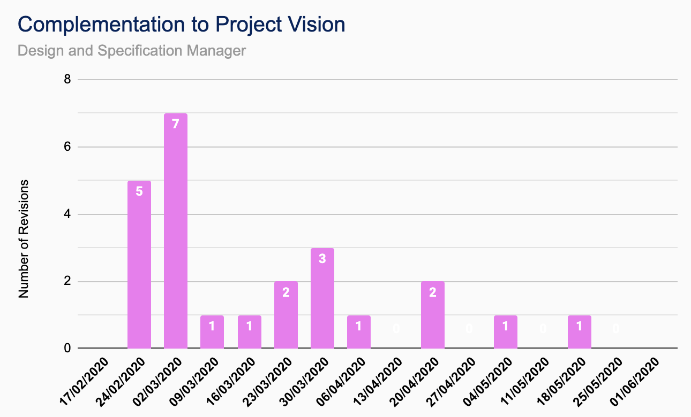

Stijn Marynissen
Design and Specification Manager
Joined: Sept. 2019
Related Projects: TutorPoint
Education: MEng Electronic Engineering with Music Technology Systems
As part of CUBIXEL . . .
. . . I'm involved with the design and implementation of the user experience (UX). As Design and Specification Manager I am a key figure in compiling the wants and needs of users to have a final program experience that is accessible and marketable. I’m responsible for deciding the front end design goals of CUBIXEL, but also communicating closely with clients to ensure that the code we create is to the client’s specification. As a developer, I help with connecting front end to back end.
For TutorPoint . . .
. . . I've been responsible for implementing initial design drafts using JavaFX alongside FXML, and modifying design in accordance with user and client feedback.
Outside of work . . .
. . . I love to read fantasy/science fiction and self improvement; further, I like learning about a plethora of different subjects; from biochemistry to classics to psychology. Writing poetry and producing music electronically is how I engage creatively. I enjoy playing Dungeons and Dragons and board games with my friends, but on my own I like walking - preferably in a forest.
Favourite programming language?
Java and PureData.
Contributions
| Documentation |
|---|
| CUBIXEL QA Manual |
| TutorPoint Functional Specification |
| TutorPoint |
|---|
| All Window/FXML files |
| Dynamic Home Page |
| Text Chat Presentation |
TutorPoint Breakdown


QA Metrics
-

User Experience Satisfaction
Difference in number of positive responses against negative responses gained from focus groups and user interviews on using the product directly. This is measured at the end of each iteration, starting from the 2nd iteration. -

Similarity to Design Vision
Difference in number of positive responses against negative responses from feedback and discussions with the client on the product design philosophy and specification. This is measured at the start of every Thursday, starting from the 2nd iteration. -

Complementation to Project Vision
Number of redesign iterations initialised by the client or on site customer, including removed design features. This is measured continually throughout iterations with a total number of redesigns for each work week every Thursday.